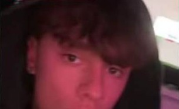
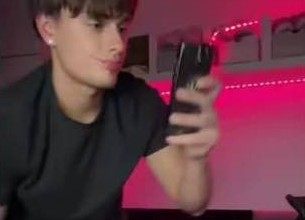
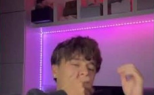
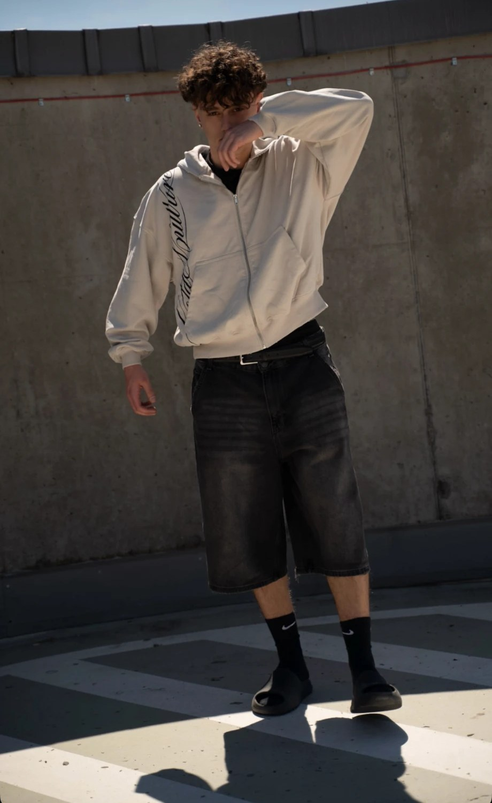
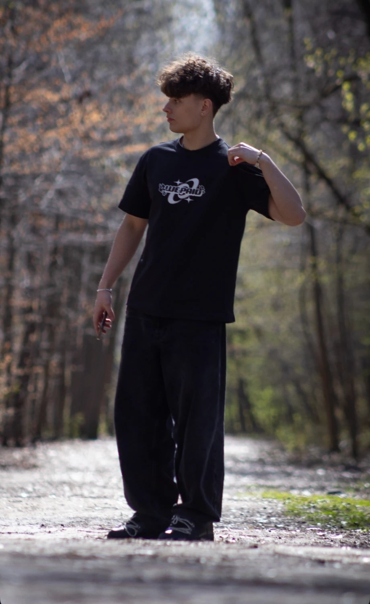

Krystian kręci w pokoju z czerwonym ledem krótkie sceny o tym, co dzieje się w klasie, na grupce i przy mamie. Ludzie nie tylko to oglądają. Podsyłają to sobie nawzajem.
Porozmawiajmy o współpracyZobacz, o czym mówi
Bez scenografii. Jedna myśl na ekranie i jego mina. Tak wyglądają teksty z prawdziwych filmów.
Dziewczyny, które wciąż składają małe obietnice na palec i śpią z pluszakami, to są najbardziej lojalne…
735,9 tys. wyświetleń · @niekryspinKiedy w Sylwestra o północy wszystkie pary będą się całować, a ja jedynie z czym będę to z butelką
677 tys. wyświetleń · @niekryspinKiedy śmieję się do telefonu i mama myśli, że piszę z miłością swojego życia, a tak naprawdę po prostu ja i moi znajomi robimy bekę ze wszystkiego
53 tys. wyświetleń · Instagram
Kiedy ktoś dzwoni do mnie na Snapchacie, a ja nie wiem, czy widzi mnie przez kamerę
15 tys. wyświetleń · @mkryspin
Jak brzmię z moją ulubioną osobą na lekcji, kiedy siedzimy obok siebie…
Zobacz na InstagramieUwielbiam mieć taką osobę, z którą mogę wałkować ten sam temat…
Zobacz na TikTokuOkoło trzech na cztery osoby, które obserwują Krystiana, to kobiety, a większość ma 18-34 lata. Jeśli Twoja marka mówi do młodych kobiet, on już z nimi rozmawia.
TikTok podaje wiek tylko dla osób 18+.
Tak mógłby wyglądać film z Twoją marką. To przykładowe pomysły. Do każdej marki przygotowujemy własne.
Kiedy przyjaciółka przez godzinę ćwiczy na mnie makijaż, a ja mówię, że wcale mi się nie podoba
Na końcu sam prosi o poprawkę. Produkt jest w kadrze przez cały film.Kiedy mama pyta, czy na pewno w tym wychodzę
Krystian broni całej stylizacji, element po elemencie.Kiedy nauczyciel pyta mnie po angielsku, a cała klasa patrzy
W kolejnej scenie uczy się w aplikacji i wraca z jednym idealnym zdaniem.

Na Instagramie to już nie tylko scenki. Sesje w ulubionych zestawach, polecane miejsca w Poznaniu i wyjazdy, które trafiają do wyróżnionych relacji. To naturalne miejsce dla mody, butów i podróży.
Napisz, co chcesz sprzedać, a podeślemy 2-3 pomysły na film z Krystianem i wycenę. Współprace prowadzi agencja Spark Scale.
sparkscaleagencja@gmail.comPobierz media kit (PDF)